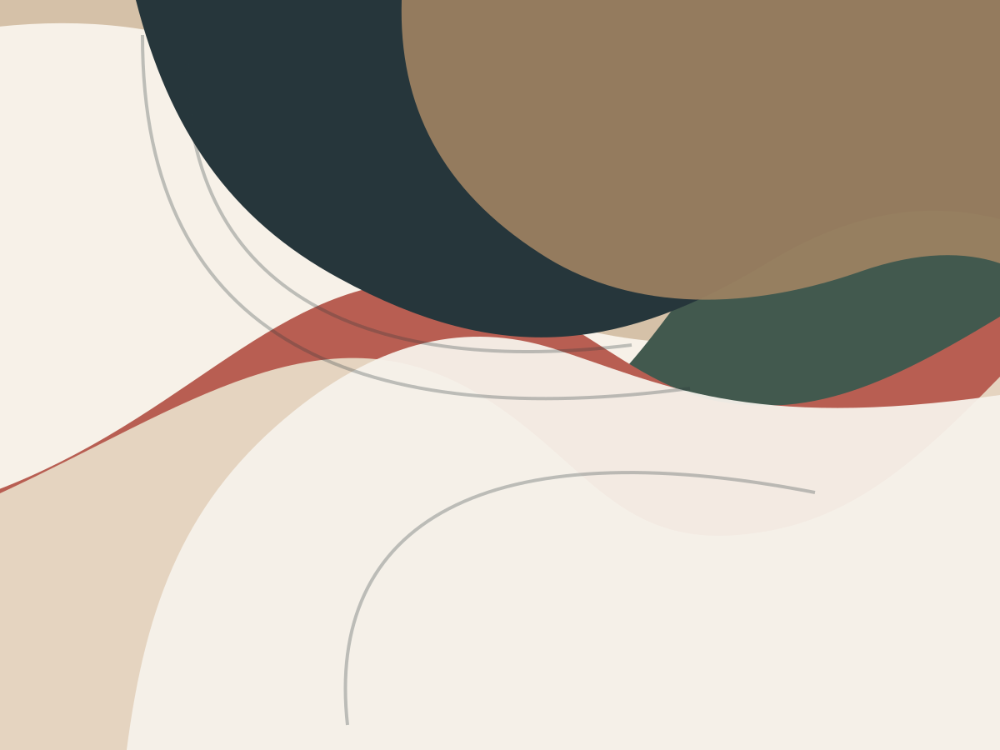

Commissions
Individual garments where cut, material and finish can be considered for the person and the occasion.
Zurich · Couture tailoring
volupte Sprenger is a couture tailoring atelier with room for commissions, alterations, and work in leather and fur.

Couture in motionThe atelier
When material, silhouette and fit come together, a piece gains its own presence. The atelier brings precise tailoring together with an eye for individual solutions.
Services
Individual garments where cut, material and finish can be considered for the person and the occasion.
Careful alterations can give existing pieces a fit that feels natural again.
Work in leather and fur, as well as pattern development, form part of the atelier’s registered focus.
Independently run
Marisa Sprenger runs volupte Sprenger as its owner. The focus is textile craft, from an initial thought through to a coherent form.
Contact
Contact options for the atelier can be added following personal approval. This website is an initial digital introduction to volupte Sprenger.